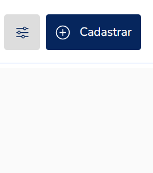
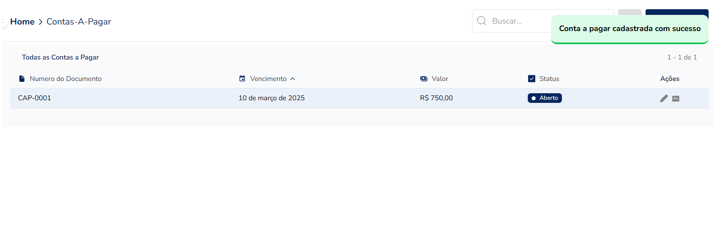

PSYS
PSYS
1° Para cadastrar uma contas a pagar, primeiro clique em FINANCEIRO e logo em seguida em contas a pagar:
2° Clique em Cadastrar
3° Preencha os campos a seguir:
Observação: A bolinha amarela em cada campo representa um campo
obrigatório a ser preenchido
Campos Obrigatórios
4° Após preencher os campos e clicar em Salvar, vai aparecer uma mensagem de conta a pagar cadastrada com sucesso.
